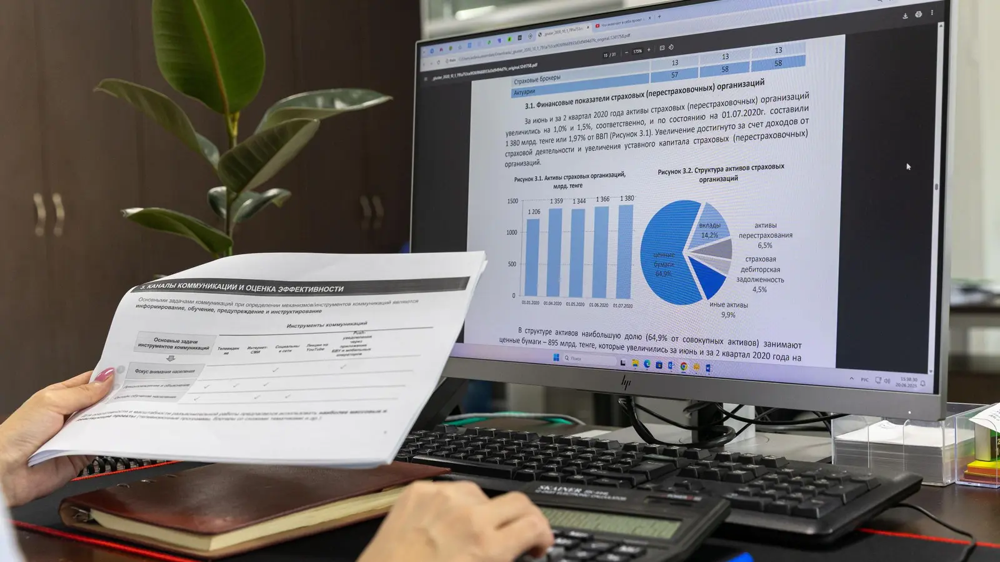

MEDIHIM INSIGHT일본 환자는 왜 병원 인스타그램을 여러 번 확인하는가반복 방문은 망설임이 아니라 신뢰를 축적하는 행동일 수 있습니다. 일본 환자의 확인 과정을 퍼널로 해석합니다.콘텐츠 읽기 →
MEDIHIM INSIGHTTOF·MOF·BOF를 구분해야 하는 이유모든 콘텐츠에 상담을 요구하면 신뢰가 자라지 않습니다. 인지·검토·전환 단계별 역할과 KPI를 나눕니다.콘텐츠 읽기 →
MEDIHIM INSIGHT병원 콘텐츠의 성과를 판단하는 법조회수와 좋아요만으로는 부족합니다. 콘텐츠 역할별 선행지표와 실제 상담·예약 기여도를 연결합니다.콘텐츠 읽기 →